Bundled datasets
amorem ships the event logs and covariates below, each loadable with
data(...). The tables and figures on this page are computed
from them when the page is built. The data
catalogue documents a wider collection, including datasets whose
licences do not allow amorem to redistribute them.
Event logs
| object | data | kind | events | actors | span |
|---|---|---|---|---|---|
classroom_events |
Classroom (McFarland 2001) | face-to-face, minutes | 691 | 20 | 43.9 minutes |
social_evolution_calls |
Social Evolution calls (Madan et al. 2012) | phone calls | 439 | 54 | 42.1 days |
social_evolution_friendship |
Social Evolution friendship survey | tie changes | 766 | 76 | 40.0 days |
radoslaw_email |
Manufacturing company email (Nurek & Michalski 2020) | 82,927 | 167 | 271 days | |
college_msg |
CollegeMsg (Panzarasa et al. 2009) | instant messages | 59,835 | 1,899 | 194 days |
email_eu_core |
Email-EU-core, one department (Paranjape et al. 2017) | 12,216 | 89 | 802 days | |
copenhagen_calls |
Copenhagen Networks Study calls | phone calls | 3,600 | 536 | 28.0 days |
copenhagen_sms |
Copenhagen Networks Study text messages | text messages | 24,333 | 568 | 28.0 days |
us_leader_visits |
US leader-to-leader visits 1945-2019 | state visits | 3,945 | 197 | 27,183 days |
football_results |
Men’s international football since 1872 | matches | 49,945 | 337 | 56,192 days |
ucdp_dyads |
UCDP armed conflict dyads 1946-2025 | conflict dyad-years | 3,518 | 704 | 79.0 years |
alien_invasions |
Alien species first records 1880-2005 | species -> region | 11,730 | 3,188 | 125 years |
congress_bills_118 holds hyperevents: each of its 16,213
bills has one sponsor and a set of cosponsors (mean 10.0, largest 331),
from 2023-01-03 to 2025-01-03. Actor attributes come in
classroom_actors, social_evolution_actors,
copenhagen_actors, congress_members_118 and
radoslaw_hierarchy.
What each log looks like
For each event log: the network of the actors in its busiest pairs, then when the 30 most active of them are active. The data catalogue adds a close-up of single events and the counting processes of the busiest pairs.
classroom_events
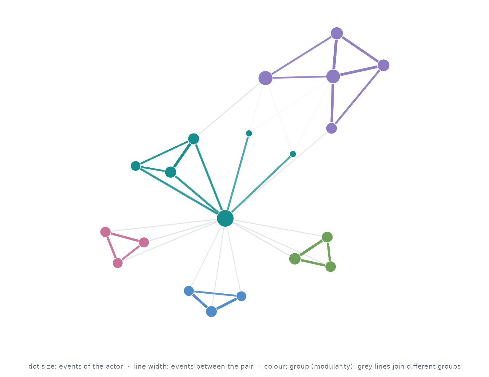
The 20 actors of the busiest pairs, out of 20; events between two of them are 100.0% of all events. Each actor’s three strongest ties are drawn (39 of 73 pairs that ever interacted): wider, darker lines carry more events, larger dots are more active actors, and colours are groups found by modularity (Louvain).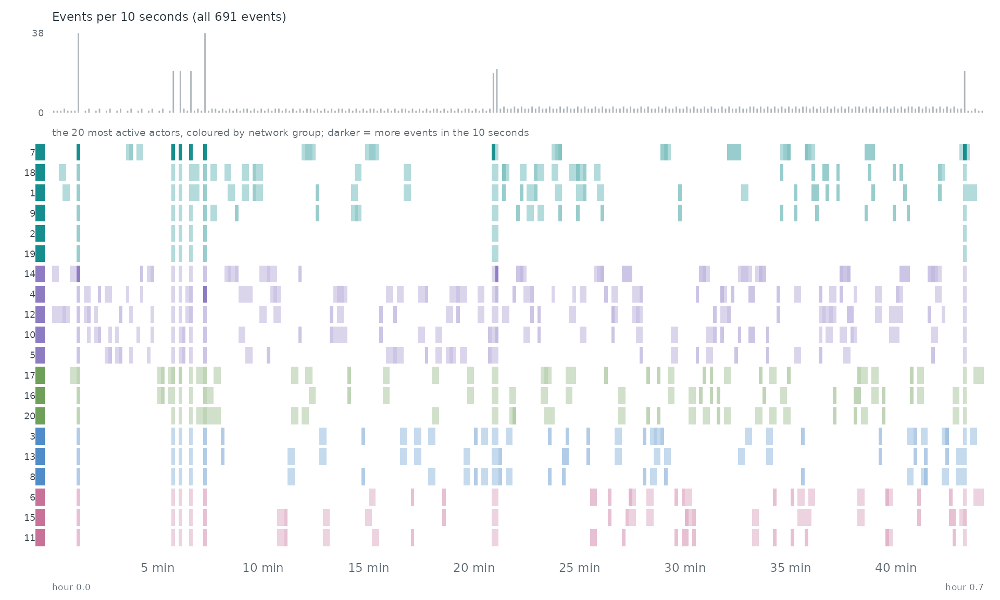
Each row is one of the 20 most active actors of the network, coloured by its group there; a cell is darker the more events (with anyone) the actor took part in during that stretch of time. The grey bars on top count all 691 events.
social_evolution_calls
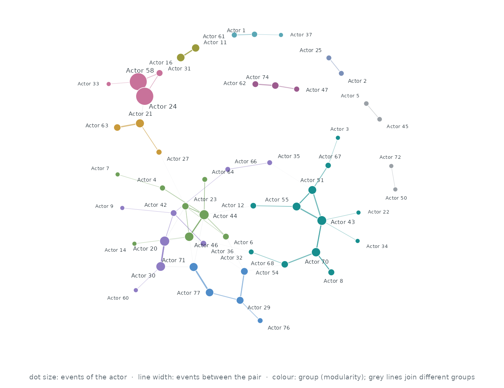
The 54 actors of the busiest pairs, out of 54; events between two of them are 100.0% of all events. Each actor’s three strongest ties are drawn (61 of 64 pairs that ever interacted): wider, darker lines carry more events, larger dots are more active actors, and colours are groups found by modularity (Louvain).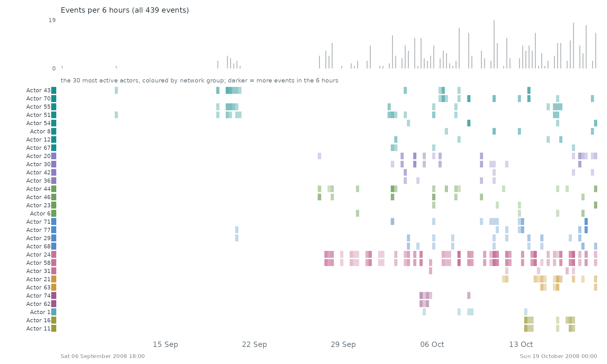
Each row is one of the 30 most active actors of the network, coloured by its group there; a cell is darker the more events (with anyone) the actor took part in during that stretch of time. The grey bars on top count all 439 events.
radoslaw_email
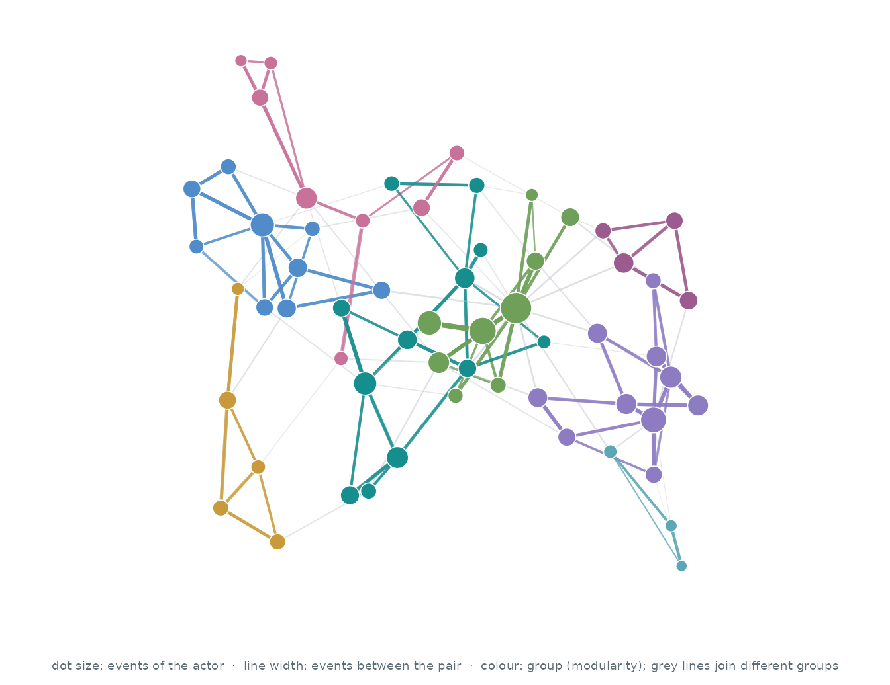
The 60 actors of the busiest pairs, out of 167; events between two of them are 64.9% of all events. Each actor’s three strongest ties are drawn (127 of 1,020 pairs that ever interacted): wider, darker lines carry more events, larger dots are more active actors, and colours are groups found by modularity (Louvain).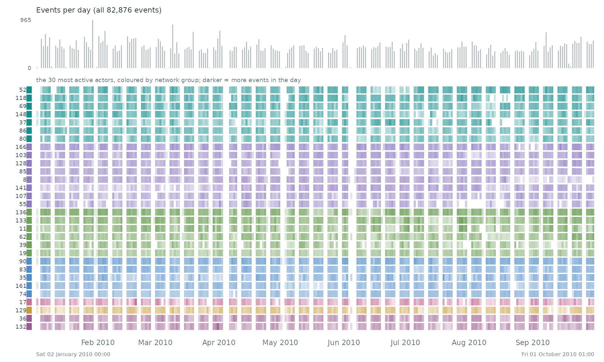
Each row is one of the 30 most active actors of the network, coloured by its group there; a cell is darker the more events (with anyone) the actor took part in during that stretch of time. The grey bars on top count all 82,876 events.
college_msg
 The 60 actors of the busiest pairs, out of 1,899; events between two of
them are 8.9% of all events. Each actor’s three strongest ties are drawn
(116 of 226 pairs that ever interacted): wider, darker lines carry more
events, larger dots are more active actors, and colours are groups found
by modularity (Louvain).
The 60 actors of the busiest pairs, out of 1,899; events between two of
them are 8.9% of all events. Each actor’s three strongest ties are drawn
(116 of 226 pairs that ever interacted): wider, darker lines carry more
events, larger dots are more active actors, and colours are groups found
by modularity (Louvain).
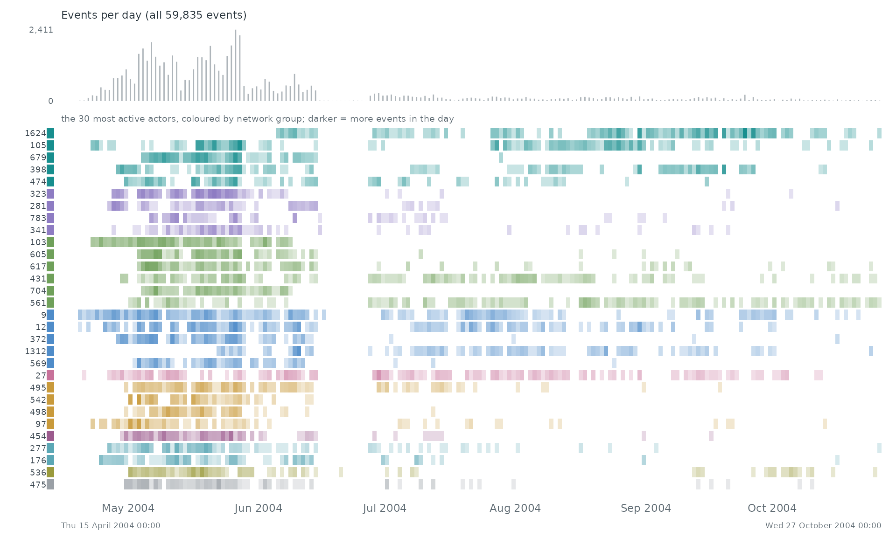
Each row is one of the 30 most active actors of the network, coloured by its group there; a cell is darker the more events (with anyone) the actor took part in during that stretch of time. The grey bars on top count all 59,835 events.
email_eu_core
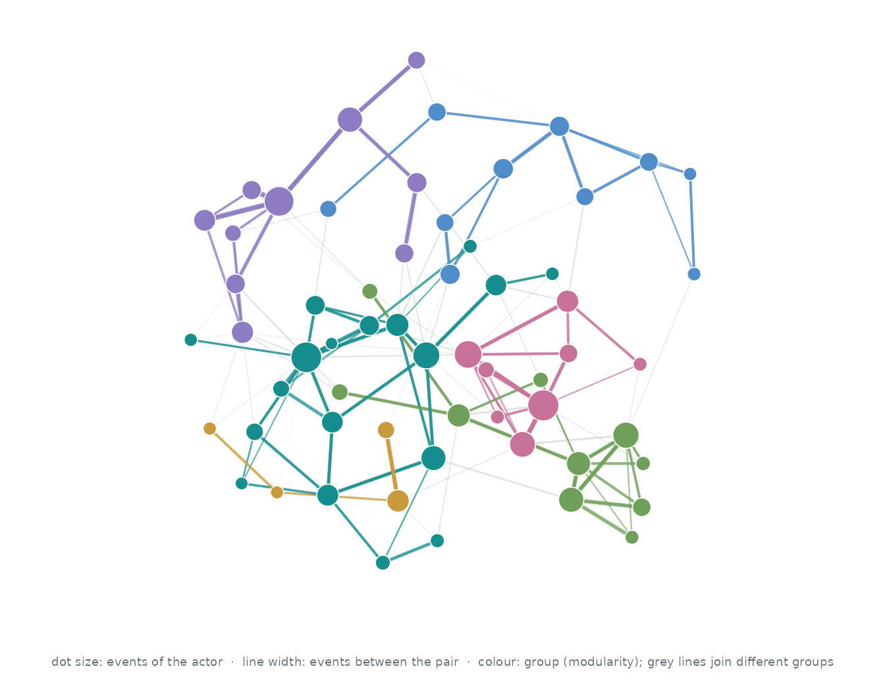
The 60 actors of the busiest pairs, out of 89; events between two of them are 89.4% of all events. Each actor’s three strongest ties are drawn (130 of 686 pairs that ever interacted): wider, darker lines carry more events, larger dots are more active actors, and colours are groups found by modularity (Louvain).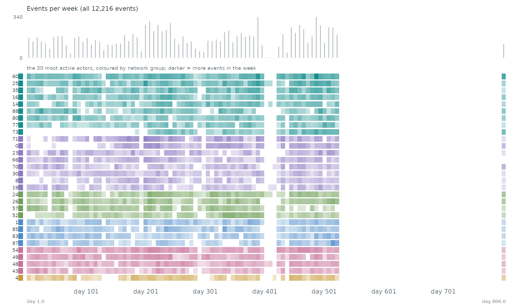
Each row is one of the 30 most active actors of the network, coloured by its group there; a cell is darker the more events (with anyone) the actor took part in during that stretch of time. The grey bars on top count all 12,216 events.
copenhagen_calls
 The 60 actors of the busiest pairs, out of 536; events between two of
them are 36.0% of all events. Each actor’s three strongest ties are
drawn (38 of 38 pairs that ever interacted): wider, darker lines carry
more events, larger dots are more active actors, and colours are groups
found by modularity (Louvain).
The 60 actors of the busiest pairs, out of 536; events between two of
them are 36.0% of all events. Each actor’s three strongest ties are
drawn (38 of 38 pairs that ever interacted): wider, darker lines carry
more events, larger dots are more active actors, and colours are groups
found by modularity (Louvain).
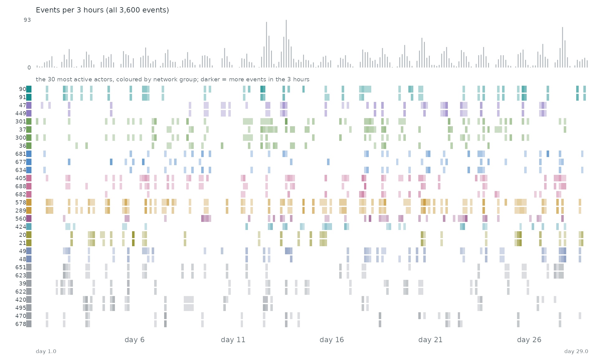
Each row is one of the 30 most active actors of the network, coloured by its group there; a cell is darker the more events (with anyone) the actor took part in during that stretch of time. The grey bars on top count all 3,600 events.
copenhagen_sms
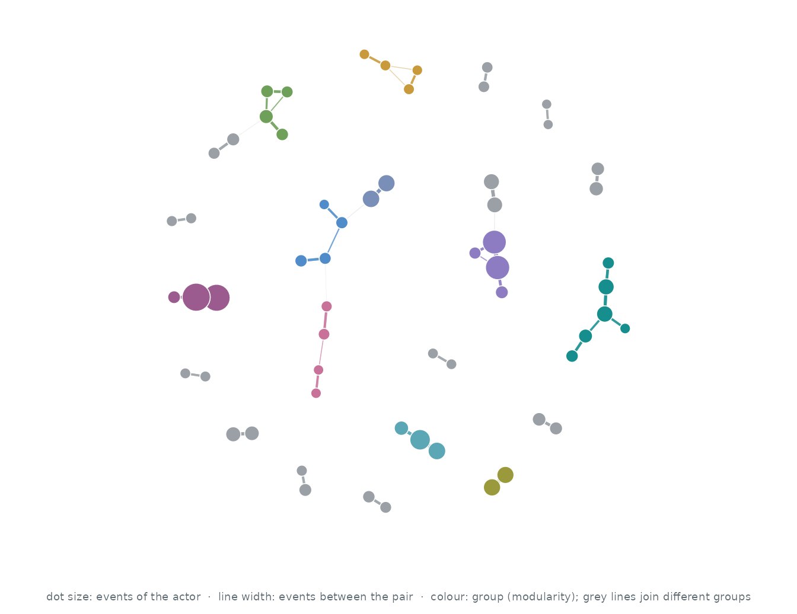
The 60 actors of the busiest pairs, out of 568; events between two of them are 56.7% of all events. Each actor’s three strongest ties are drawn (45 of 45 pairs that ever interacted): wider, darker lines carry more events, larger dots are more active actors, and colours are groups found by modularity (Louvain).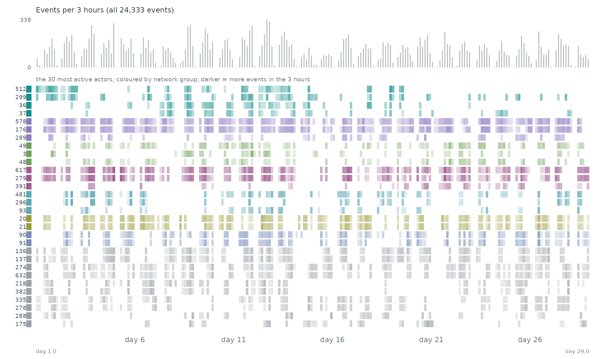
Each row is one of the 30 most active actors of the network, coloured by its group there; a cell is darker the more events (with anyone) the actor took part in during that stretch of time. The grey bars on top count all 24,333 events.
us_leader_visits
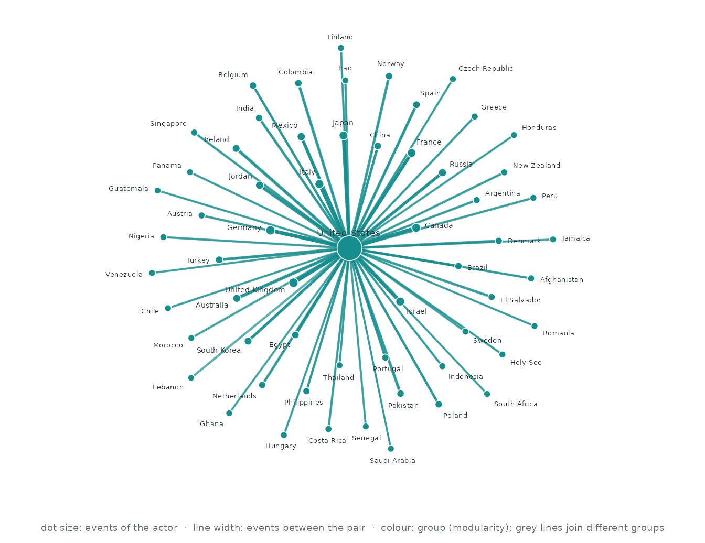
The 60 actors of the busiest pairs, out of 197; events between two of them are 74.0% of all events. Each actor’s three strongest ties are drawn (59 of 59 pairs that ever interacted): wider, darker lines carry more events, larger dots are more active actors, and colours are groups found by modularity (Louvain).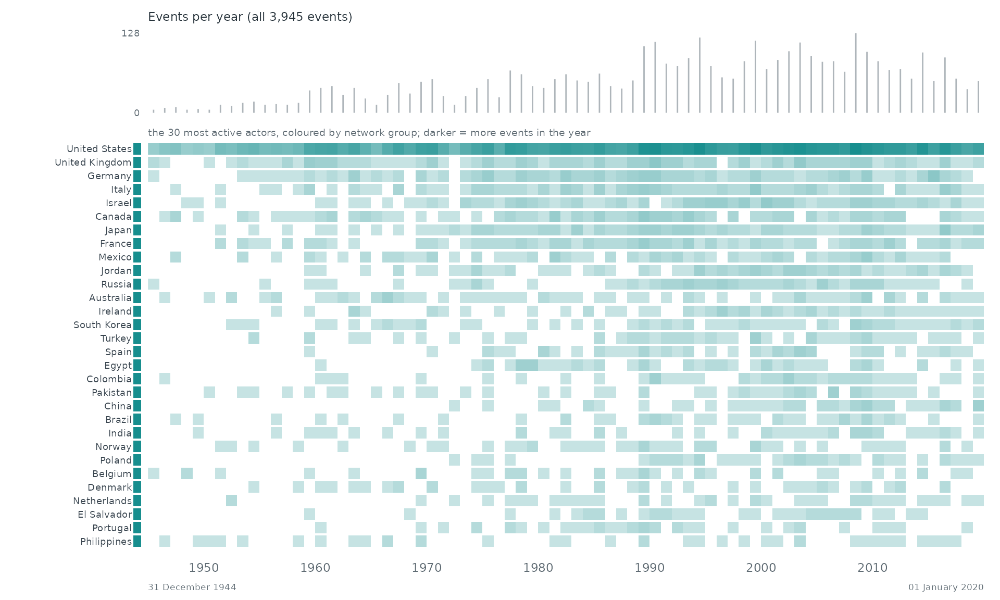
Each row is one of the 30 most active actors of the network, coloured by its group there; a cell is darker the more events (with anyone) the actor took part in during that stretch of time. The grey bars on top count all 3,945 events.
football_results
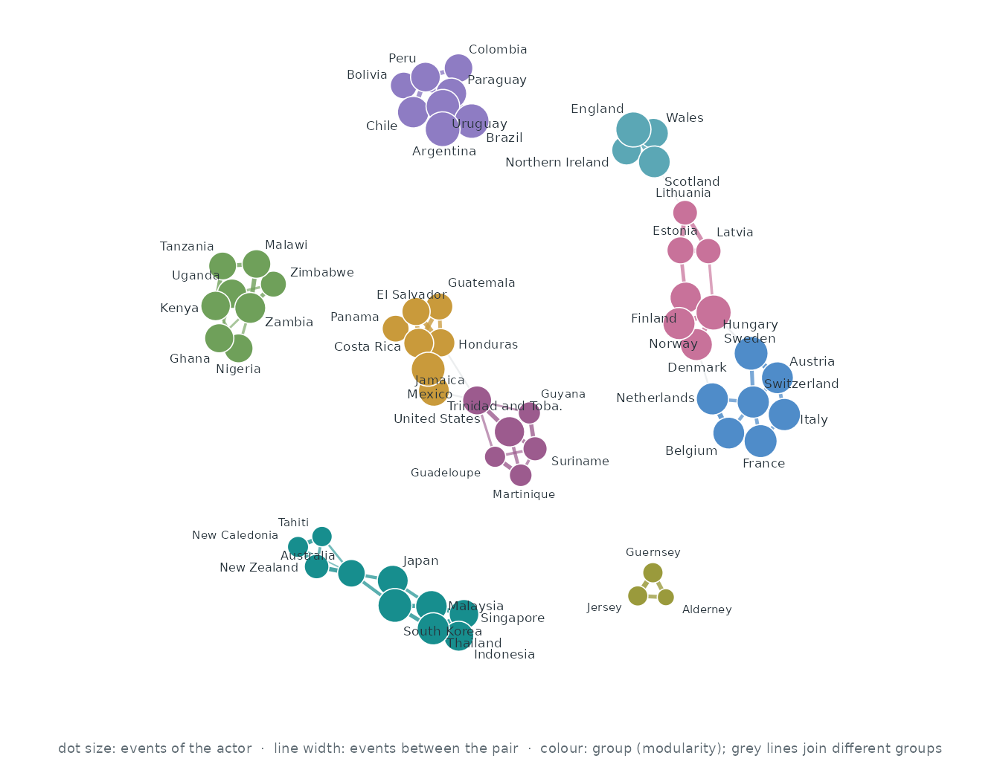
The 60 actors of the busiest pairs, out of 337; events between two of them are 23.7% of all events. Each actor’s three strongest ties are drawn (108 of 820 pairs that ever interacted): wider, darker lines carry more events, larger dots are more active actors, and colours are groups found by modularity (Louvain).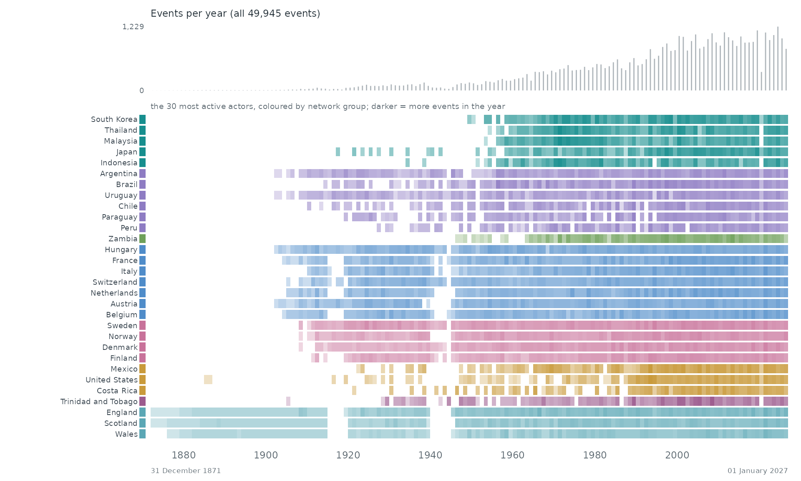
Each row is one of the 30 most active actors of the network, coloured by its group there; a cell is darker the more events (with anyone) the actor took part in during that stretch of time. The grey bars on top count all 49,945 events.
ucdp_dyads
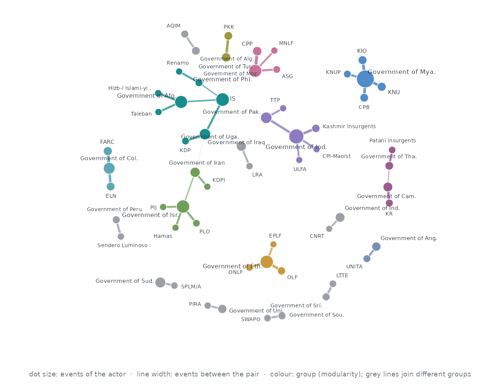
The 60 actors of the busiest pairs, out of 704; events between two of them are 31.2% of all events. Each actor’s three strongest ties are drawn (49 of 51 pairs that ever interacted): wider, darker lines carry more events, larger dots are more active actors, and colours are groups found by modularity (Louvain).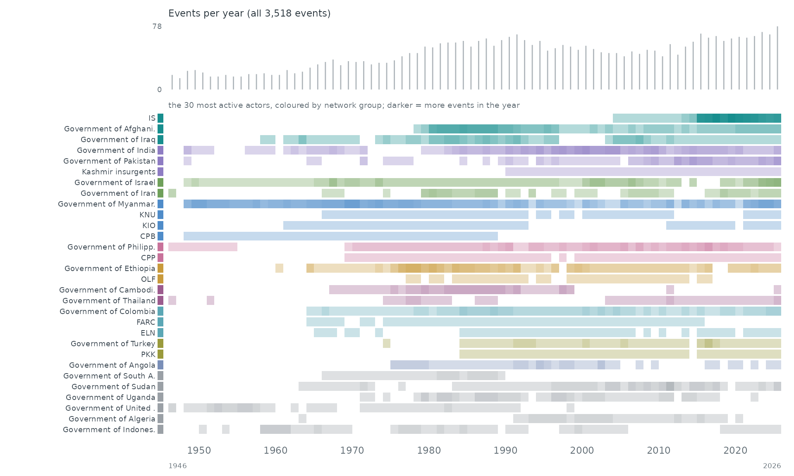
Each row is one of the 30 most active actors of the network, coloured by its group there; a cell is darker the more events (with anyone) the actor took part in during that stretch of time. The grey bars on top count all 3,518 events.
alien_invasions
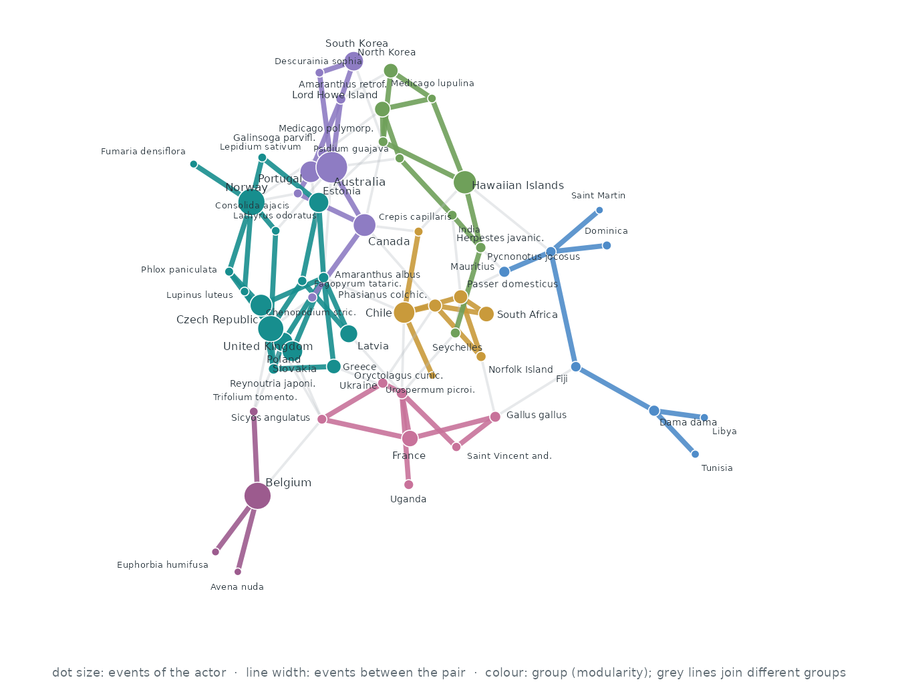
The 60 actors of the busiest pairs, out of 3,188; events between two of them are 1.2% of all events. Each actor’s three strongest ties are drawn (105 of 145 pairs that ever interacted): wider, darker lines carry more events, larger dots are more active actors, and colours are groups found by modularity (Louvain).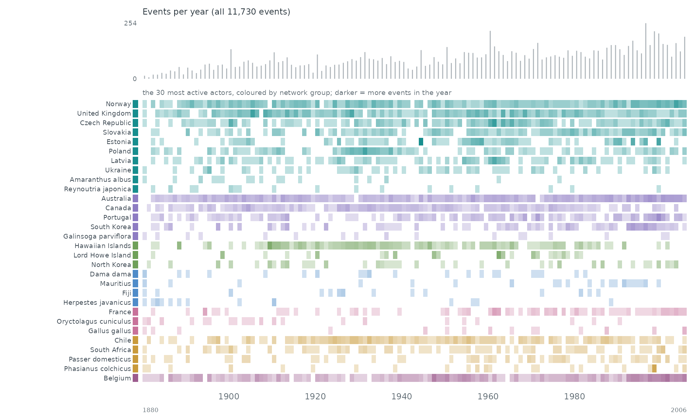
Each row is one of the 30 most active actors of the network, coloured by its group there; a cell is darker the more events (with anyone) the actor took part in during that stretch of time. The grey bars on top count all 11,730 events.Who is active
Share of all events in which the most active 10% of actors take part, and the Gini coefficient of actor activity (0 when all actors are equally active):
| object | events with the top 10% of actors | Gini |
|---|---|---|
classroom_events |
23.4% | 0.29 |
social_evolution_calls |
57.1% | 0.68 |
social_evolution_friendship |
27.1% | 0.40 |
radoslaw_email |
40.9% | 0.62 |
college_msg |
60.2% | 0.75 |
email_eu_core |
34.3% | 0.53 |
copenhagen_calls |
42.8% | 0.59 |
copenhagen_sms |
61.3% | 0.73 |
us_leader_visits |
72.0% | 0.79 |
football_results |
30.2% | 0.54 |
ucdp_dyads |
58.9% | 0.70 |
alien_invasions |
62.7% | 0.70 |
Logs with highly concentrated activity are where count statistics carry sender and receiver activity rather than dyadic history; see Analyses of bundled event logs for a comparison with and without a sender frailty.
Global covariates
-
enso_nino34: tree-ring reconstruction of the winter Niño3.4 anomaly, 1301-2005 (seevignette("species-invasion"));oni: the instrumental Oceanic Niño Index since 1950. -
daily_weather: daily temperature and precipitation at Boston (Social Evolution, 2008), Santa Ana (CollegeMsg, 2004), and Warsaw and Wroclaw (manufacturing email, 2010). -
public_holidays: public holidays for the same countries and years.
They take one value at a time for every pair, so their effects are
estimated with time-shifted sampling
(sample_non_events(shift = "exponential")); the email case study does this with the
clock.
dist_matrix holds distances between 56 US states and
territories, used by the validation experiments.
Time conventions
Event times are days since the first event, except
classroom_events (minutes since the start of the class),
ucdp_dyads (year) and alien_invasions (years
start and stop). Where the source gives clock
time, attr(x, "unix_origin") holds the Unix time of
time = 0:
format(as.POSIXct(attr(radoslaw_email, "unix_origin"), origin = "1970-01-01",
tz = "Europe/Warsaw"), usetz = TRUE)## [1] "2010-01-02 17:40:10 CET"
format(as.POSIXct(attr(college_msg, "unix_origin"), origin = "1970-01-01",
tz = "America/Los_Angeles"), usetz = TRUE)## [1] "2004-04-15 07:56:01 PDT"Sources and licences
| object | source | licence |
|---|---|---|
radoslaw_email,
radoslaw_hierarchy
|
Harvard Dataverse doi:10.7910/DVN/6Z3CGX | CC0 1.0 |
copenhagen_* |
Figshare doi:10.6084/m9.figshare.7267433 | MIT |
congress_bills_118,
congress_members_118
|
US GPO govinfo BILLSTATUS bulk data | public domain (US Government work) |
us_leader_visits |
Harvard Dataverse doi:10.7910/DVN/2ZNR5R | CC0 1.0 |
ucdp_dyads |
Uppsala Conflict Data Program | CC BY 4.0 |
football_results |
github.com/martj42/international_results | CC0 1.0 |
alien_invasions |
Dryad doi:10.5061/dryad.x69p8czpv | CC0 1.0 |
daily_weather, oni,
enso_nino34
|
NOAA NCEI and CPC | public domain (US Government work) |
public_holidays |
Nager.Date API | dates and names (facts) |
dist_matrix |
US Census TIGER/Line | public domain (US Government work) |
college_msg,
email_eu_core
|
SNAP (Stanford) | no licence stated (citation requested) |
classroom_events,
classroom_actors
|
networkDynamic R package | package licence GPL-3 |
social_evolution_* |
goldfish R package | package licence GPL-3 |
Each object’s help page (?radoslaw_email,
?ucdp_dyads, …) gives the reference to cite. Please cite
the original source of any dataset you use, in addition to amorem.